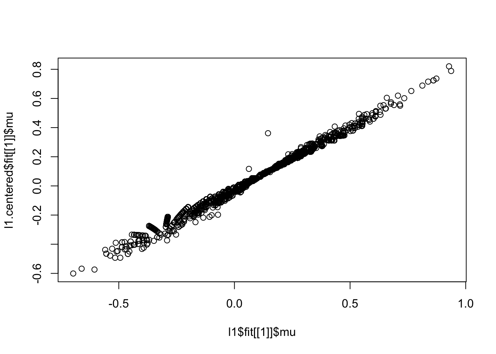
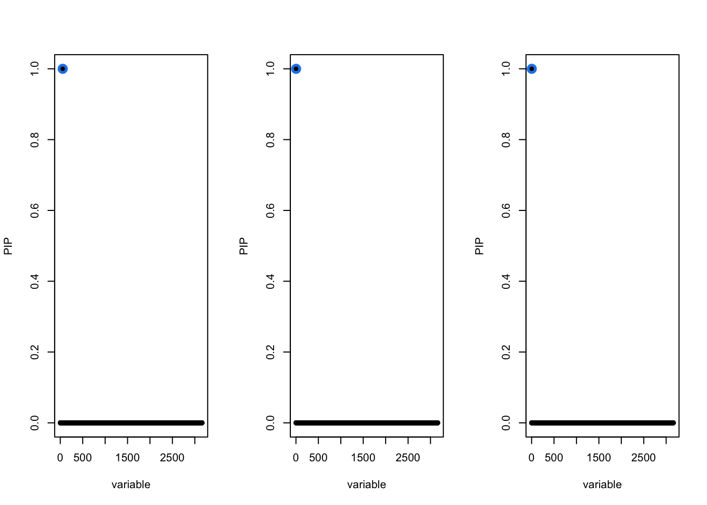
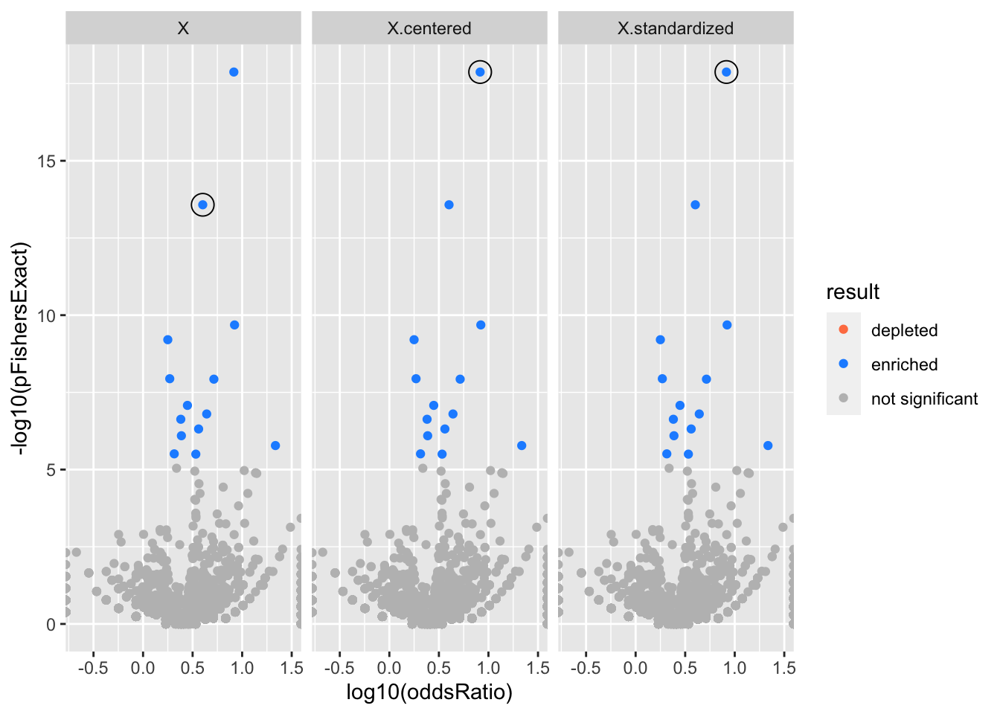
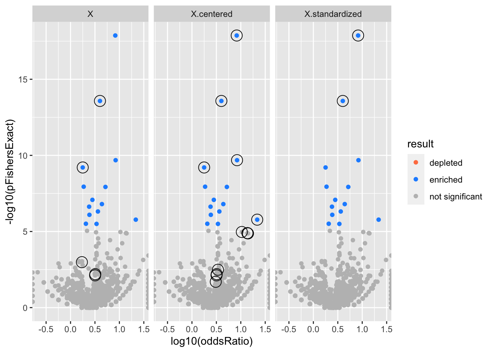

Last updated: 2022-04-18
Checks: 7 0
Knit directory: logistic-susie-gsea/
This reproducible R Markdown analysis was created with workflowr (version 1.7.0). The Checks tab describes the reproducibility checks that were applied when the results were created. The Past versions tab lists the development history.
Great! Since the R Markdown file has been committed to the Git repository, you know the exact version of the code that produced these results.
Great job! The global environment was empty. Objects defined in the global environment can affect the analysis in your R Markdown file in unknown ways. For reproduciblity it’s best to always run the code in an empty environment.
The command set.seed(20220105) was run prior to running the code in the R Markdown file. Setting a seed ensures that any results that rely on randomness, e.g. subsampling or permutations, are reproducible.
Great job! Recording the operating system, R version, and package versions is critical for reproducibility.
Nice! There were no cached chunks for this analysis, so you can be confident that you successfully produced the results during this run.
Great job! Using relative paths to the files within your workflowr project makes it easier to run your code on other machines.
Great! You are using Git for version control. Tracking code development and connecting the code version to the results is critical for reproducibility.
The results in this page were generated with repository version feaa227. See the Past versions tab to see a history of the changes made to the R Markdown and HTML files.
Note that you need to be careful to ensure that all relevant files for the analysis have been committed to Git prior to generating the results (you can use wflow_publish or wflow_git_commit). workflowr only checks the R Markdown file, but you know if there are other scripts or data files that it depends on. Below is the status of the Git repository when the results were generated:
Ignored files:
Ignored: .DS_Store
Ignored: .RData
Ignored: .Rhistory
Ignored: .Rproj.user/
Ignored: library/
Ignored: renv/library/
Ignored: renv/staging/
Ignored: staging/
Untracked files:
Untracked: .ipynb_checkpoints/
Untracked: Untitled.ipynb
Untracked: _targets.R
Untracked: _targets.html
Untracked: _targets.md
Untracked: _targets/
Untracked: _targets_r/
Untracked: analysis/alpha_ash_v_point_normal.Rmd
Untracked: analysis/de_droplet_noshrink.Rmd
Untracked: analysis/de_droplet_noshrink_logistic_susie.Rmd
Untracked: analysis/fetal_reference_cellid_gsea.Rmd
Untracked: analysis/fixed_intercept.Rmd
Untracked: analysis/iDEA_examples.Rmd
Untracked: analysis/latent_gene_list.Rmd
Untracked: analysis/linear_method_failure_modes.Rmd
Untracked: analysis/linear_regression_failure_regime.Rmd
Untracked: analysis/logistic_susie_veb_boost_vs_vb.Rmd
Untracked: analysis/logistic_susie_vis.Rmd
Untracked: analysis/references.bib
Untracked: analysis/simulations.Rmd
Untracked: analysis/test.Rmd
Untracked: build_site.R
Untracked: cache/
Untracked: code/html_tables.R
Untracked: code/latent_logistic_susie.R
Untracked: code/load_data.R
Untracked: code/logistic_susie_data_driver.R
Untracked: code/marginal_sumstat_gsea_collapsed.R
Untracked: code/point_normal.R
Untracked: code/sumstat_gsea.py
Untracked: code/susie_gsea_queries.R
Untracked: data/adipose_2yr_topsnp.txt
Untracked: data/de-droplet/
Untracked: data/deng/
Untracked: data/fetal_reference_cellid_gene_sets.RData
Untracked: data/human_chimp_eb/
Untracked: data/pbmc-purified/
Untracked: data/wenhe_baboon_diet/
Untracked: docs.zip
Untracked: export/
Untracked: index.md
Untracked: simulation_targets/
Unstaged changes:
Modified: _simulation_targets.R
Modified: _targets.Rmd
Modified: analysis/alpha_for_single_cell.Rmd
Modified: analysis/baboon_diet.Rmd
Modified: analysis/gseabenchmark_tcga.Rmd
Modified: analysis/human_chimp_eb_de_example.Rmd
Modified: analysis/single_cell_pbmc.Rmd
Modified: analysis/single_cell_pbmc_l1.Rmd
Deleted: analysis/summary_stat_gsea_univariate_simulations.Rmd
Modified: analysis/the_big_geneset.Rmd
Modified: code/enrichment_pipeline.R
Modified: code/fit_baselines.R
Modified: code/fit_logistic_susie.R
Modified: code/fit_mr_ash.R
Modified: code/fit_susie.R
Modified: code/load_gene_sets.R
Modified: code/logistic_susie_vb.R
Modified: code/marginal_sumstat_gsea.R
Modified: code/simulate_gene_lists.R
Modified: code/tccm_ebnm.R
Modified: target_components/factories.R
Modified: target_components/methods.R
Note that any generated files, e.g. HTML, png, CSS, etc., are not included in this status report because it is ok for generated content to have uncommitted changes.
These are the previous versions of the repository in which changes were made to the R Markdown (analysis/scale_v_standardize_v_raw.Rmd) and HTML (docs/scale_v_standardize_v_raw.html) files. If you’ve configured a remote Git repository (see ?wflow_git_remote), click on the hyperlinks in the table below to view the files as they were in that past version.
| File | Version | Author | Date | Message |
|---|---|---|---|---|
| Rmd | feaa227 | karltayeb | 2022-04-18 | wflow_publish(“analysis/scale_v_standardize_v_raw.Rmd”) |
The way VEB.boost handles the intercept is better than estimating a fixed intercept. Here we try: * scaled X * centered X * untrasnformed X
For a univariate regression we can think of centering/shifting \(x\) as just shifting the intercept.
That is the regression coefficients we estimate using a centered version of \(x\), \(\tilde x = x - \bar x\) will be
\[ \tilde\beta_0 = \hat\beta_0 - \tilde\beta_1 \bar x\\ \tilde \beta_1 = \hat \beta_1 \]
Where \((\hat\beta_0, \hat\beta_1)\) are the coefficients estimated from the un-centered \(x\).
Although a bit harder to visualize, the same holds true for multivariate \(X\), where we center each column of \(X\), the offsets get absorbed into the intercept in a deterministic way.
So why would centering have an impact? I suppose when the model treats the slope and intercept differently there could be a difference. That is if we have a flat prior on the intercept and a regularized coefficient? But that doesn’t quite line up for me since the coefficient estimates should be the same?
library(tidyverse)── Attaching packages ─────────────────────────────────────── tidyverse 1.3.1 ──✓ ggplot2 3.3.5 ✓ purrr 0.3.4
✓ tibble 3.1.6 ✓ dplyr 1.0.8
✓ tidyr 1.2.0 ✓ stringr 1.4.0
✓ readr 2.1.2 ✓ forcats 0.5.1── Conflicts ────────────────────────────────────────── tidyverse_conflicts() ──
x dplyr::filter() masks stats::filter()
x dplyr::lag() masks stats::lag()source('code/load_gene_sets.R')
source('code/load_data.R')
genesets <- load_gene_sets()
data <- load_sc_pbmc()Loading required package: DESeq2Loading required package: S4VectorsLoading required package: stats4Loading required package: BiocGenerics
Attaching package: 'BiocGenerics'The following objects are masked from 'package:dplyr':
combine, intersect, setdiff, unionThe following objects are masked from 'package:stats':
IQR, mad, sd, var, xtabsThe following objects are masked from 'package:base':
anyDuplicated, append, as.data.frame, basename, cbind, colnames,
dirname, do.call, duplicated, eval, evalq, Filter, Find, get, grep,
grepl, intersect, is.unsorted, lapply, Map, mapply, match, mget,
order, paste, pmax, pmax.int, pmin, pmin.int, Position, rank,
rbind, Reduce, rownames, sapply, setdiff, sort, table, tapply,
union, unique, unsplit, which.max, which.min
Attaching package: 'S4Vectors'The following objects are masked from 'package:dplyr':
first, renameThe following object is masked from 'package:tidyr':
expandThe following objects are masked from 'package:base':
expand.grid, I, unnameLoading required package: IRanges
Attaching package: 'IRanges'The following objects are masked from 'package:dplyr':
collapse, desc, sliceThe following object is masked from 'package:purrr':
reduceLoading required package: GenomicRangesLoading required package: GenomeInfoDbLoading required package: SummarizedExperimentLoading required package: MatrixGenericsLoading required package: matrixStats
Attaching package: 'matrixStats'The following object is masked from 'package:dplyr':
count
Attaching package: 'MatrixGenerics'The following objects are masked from 'package:matrixStats':
colAlls, colAnyNAs, colAnys, colAvgsPerRowSet, colCollapse,
colCounts, colCummaxs, colCummins, colCumprods, colCumsums,
colDiffs, colIQRDiffs, colIQRs, colLogSumExps, colMadDiffs,
colMads, colMaxs, colMeans2, colMedians, colMins, colOrderStats,
colProds, colQuantiles, colRanges, colRanks, colSdDiffs, colSds,
colSums2, colTabulates, colVarDiffs, colVars, colWeightedMads,
colWeightedMeans, colWeightedMedians, colWeightedSds,
colWeightedVars, rowAlls, rowAnyNAs, rowAnys, rowAvgsPerColSet,
rowCollapse, rowCounts, rowCummaxs, rowCummins, rowCumprods,
rowCumsums, rowDiffs, rowIQRDiffs, rowIQRs, rowLogSumExps,
rowMadDiffs, rowMads, rowMaxs, rowMeans2, rowMedians, rowMins,
rowOrderStats, rowProds, rowQuantiles, rowRanges, rowRanks,
rowSdDiffs, rowSds, rowSums2, rowTabulates, rowVarDiffs, rowVars,
rowWeightedMads, rowWeightedMeans, rowWeightedMedians,
rowWeightedSds, rowWeightedVarsLoading required package: BiobaseWelcome to Bioconductor
Vignettes contain introductory material; view with
'browseVignettes()'. To cite Bioconductor, see
'citation("Biobase")', and for packages 'citation("pkgname")'.
Attaching package: 'Biobase'The following object is masked from 'package:MatrixGenerics':
rowMediansThe following objects are masked from 'package:matrixStats':
anyMissing, rowMedians'select()' returned 1:many mapping between keys and columnslibrary(tictoc)
source('code/logistic_susie_vb.R')
source('code/enrichment_pipeline.R')
do_logistic_susie2 = partial(do_logistic_susie, genesets=genesets, data=data)
do_ora2 = partial(do_ora, genesets=genesets, data=data)
tic('Logistic SuSiE Sparse X')
susie.args = list(L=1, standardize=F, center=F, verbose=T)
l1 <- do_logistic_susie2('CD19+ B','gomf',1e-4,susie.args = susie.args)Fitting logistic susie...
Experiment = CD19+ B
Database = gomf
thresh = 1e-04
convergedtoc()Logistic SuSiE Sparse X: 0.766 sec elapsedtic('Logistic SuSiE Centered X')
susie.args = list(L=1, standardize=F, center=T, verbose=T)
l1.centered <- do_logistic_susie2('CD19+ B','gomf',1e-4,susie.args = susie.args)Fitting logistic susie...
Experiment = CD19+ B
Database = gomf
thresh = 1e-04
convergedtoc()Logistic SuSiE Centered X: 4.56 sec elapsedtic('Logistic SuSiE Standardized X')
susie.args = list(L=1, standardize=T, center=T, verbose=T)
l1.standardized <- do_logistic_susie2('CD19+ B','gomf',1e-4,susie.args = susie.args)Fitting logistic susie...
Experiment = CD19+ B
Database = gomf
thresh = 1e-04
convergedtoc()Logistic SuSiE Standardized X: 7.891 sec elapsedl1.combined <- rbind(l1, l1.centered, l1.standardized)
l1.combined <- l1.combined %>%
mutate(X = c('X', 'X.centered', 'X.standardized'))
ora = do_ora2('CD19+ B','gomf',1e-4)tic('Logistic SuSiE Sparse X')
susie.args = list(L=10, standardize=F, center=F, verbose=T)
l10 <- do_logistic_susie2('CD19+ B','gomf',1e-4,susie.args = susie.args)Fitting logistic susie...
Experiment = CD19+ B
Database = gomf
thresh = 1e-04
convergedtoc()Logistic SuSiE Sparse X: 1.325 sec elapsedtic('Logistic SuSiE Standardized X')
susie.args = list(L=10, standardize=F, center=T, verbose=T)
l10.centered <- do_logistic_susie2('CD19+ B','gomf',1e-4,susie.args = susie.args)Fitting logistic susie...
Experiment = CD19+ B
Database = gomf
thresh = 1e-04
convergedtoc()Logistic SuSiE Standardized X: 36.278 sec elapsedtic('Logistic SuSiE Standardized X')
susie.args = list(L=10, standardize=T, center=T, verbose=T)
l10.standardized <- do_logistic_susie2('CD19+ B','gomf',1e-4,susie.args = susie.args)Fitting logistic susie...
Experiment = CD19+ B
Database = gomf
thresh = 1e-04
convergedtoc()Logistic SuSiE Standardized X: 9.112 sec elapsedl10.combined <- rbind(l10, l10.centered, l10.standardized)
l10.combined <- l10.combined %>%
mutate(X = c('X', 'X.centered', 'X.standardized'))get_cs_summary_condensed = function(fit){
fit %>%
get_credible_set_summary() %>%
group_by(geneSet) %>%
arrange(desc(alpha)) %>%
filter(row_number() == 1)
}
fits <- l1.combined
# gene set summary
res <- fits %>%
left_join(ora) %>%
mutate(
gs_summary = map(fit, get_gene_set_summary),
cs_summary = map(fit, get_cs_summary_condensed),
res = map2(gs_summary, cs_summary, ~ left_join(.x, .y, by='geneSet')),
res = map2(res, ora, ~ left_join(.x, .y))
) %>%
select(-c(fit, susie.args, ora, gs_summary, cs_summary)) %>%
unnest(res)Joining, by = c("experiment", "db", "thresh")
Joining, by = c("geneSet", "component")
Joining, by = c("geneSet", "component")
Joining, by = c("geneSet", "component")
Joining, by = c("geneSet", "component")
Joining, by = c("geneSet", "component")
Joining, by = c("geneSet", "component")
Joining, by = "geneSet"
Joining, by = "geneSet"
Joining, by = "geneSet"# gene set summary
res.l10 <- l10.combined %>%
left_join(ora) %>%
mutate(
gs_summary = map(fit, get_gene_set_summary),
cs_summary = map(fit, get_cs_summary_condensed),
res = map2(gs_summary, cs_summary, ~ left_join(.x, .y, by='geneSet')),
res = map2(res, ora, ~ left_join(.x, .y))
) %>%
select(-c(fit, susie.args, ora, gs_summary, cs_summary)) %>%
unnest(res)Joining, by = c("experiment", "db", "thresh")
Joining, by = c("geneSet", "component")
Joining, by = c("geneSet", "component")
Joining, by = c("geneSet", "component")
Joining, by = c("geneSet", "component")
Joining, by = c("geneSet", "component")
Joining, by = c("geneSet", "component")
Joining, by = "geneSet"
Joining, by = "geneSet"
Joining, by = "geneSet"plot(l1$fit[[1]]$mu, l1.centered$fit[[1]]$mu)
library(susieR)
par(mfrow=c(1,3))
susie_plot(l1$fit[[1]], 'PIP')
susie_plot(l1.centered$fit[[1]], 'PIP')
susie_plot(l1.standardized$fit[[1]], 'PIP')
l1.combined$fit[[1]]$set$cs$L1
[1] 54l1.combined$fit[[2]]$set$cs$L1
[1] 3l1.combined$fit[[3]]$set$cs$L1
[1] 3get_ora_enrichments = function(tbl){
tbl %>% mutate(
padj = p.adjust(pFishersExact),
result = case_when(
padj < 0.05 & oddsRatio < 1 ~ 'depleted',
padj < 0.05 & oddsRatio > 1 ~ 'enriched',
TRUE ~ 'not significant'
)
)
}
do.volcano = function(res){
res %>%
get_ora_enrichments %>%
ggplot(aes(x=log10(oddsRatio), y=-log10(pFishersExact), color=result)) +
geom_point() +
geom_point(
res %>% filter(in_cs, active_cs),
mapping=aes(x=log10(oddsRatio), y=-log10(pFishersExact)),
color='black', pch=21, size=5) +
scale_color_manual(values = c('depleted' = 'coral',
'enriched' = 'dodgerblue',
'not significant' = 'grey'))
}
do.volcano(res) + facet_wrap('X')
do.volcano(res.l10) + facet_wrap('X')
sessionInfo()R version 4.1.2 (2021-11-01)
Platform: x86_64-apple-darwin17.0 (64-bit)
Running under: macOS Big Sur 10.16
Matrix products: default
BLAS: /Library/Frameworks/R.framework/Versions/4.1/Resources/lib/libRblas.0.dylib
LAPACK: /Library/Frameworks/R.framework/Versions/4.1/Resources/lib/libRlapack.dylib
locale:
[1] en_US.UTF-8/en_US.UTF-8/en_US.UTF-8/C/en_US.UTF-8/en_US.UTF-8
attached base packages:
[1] stats4 stats graphics grDevices datasets utils methods
[8] base
other attached packages:
[1] susieR_0.11.92 tictoc_1.0.1
[3] DESeq2_1.34.0 SummarizedExperiment_1.24.0
[5] Biobase_2.54.0 MatrixGenerics_1.6.0
[7] matrixStats_0.61.0 GenomicRanges_1.46.1
[9] GenomeInfoDb_1.30.1 IRanges_2.28.0
[11] S4Vectors_0.32.3 BiocGenerics_0.40.0
[13] forcats_0.5.1 stringr_1.4.0
[15] dplyr_1.0.8 purrr_0.3.4
[17] readr_2.1.2 tidyr_1.2.0
[19] tibble_3.1.6 ggplot2_3.3.5
[21] tidyverse_1.3.1
loaded via a namespace (and not attached):
[1] readxl_1.3.1 backports_1.4.1 workflowr_1.7.0
[4] systemfonts_1.0.4 plyr_1.8.6 igraph_1.2.11
[7] splines_4.1.2 BiocParallel_1.28.3 digest_0.6.29
[10] foreach_1.5.2 htmltools_0.5.2 fansi_1.0.2
[13] magrittr_2.0.2 memoise_2.0.1 doParallel_1.0.17
[16] tzdb_0.2.0 Biostrings_2.62.0 annotate_1.72.0
[19] modelr_0.1.8 vroom_1.5.7 svglite_2.1.0
[22] prettyunits_1.1.1 colorspace_2.0-3 blob_1.2.2
[25] rvest_1.0.2 haven_2.4.3 xfun_0.30
[28] crayon_1.5.0 RCurl_1.98-1.6 jsonlite_1.8.0
[31] genefilter_1.76.0 survival_3.3-1 iterators_1.0.14
[34] glue_1.6.2 gtable_0.3.0 zlibbioc_1.40.0
[37] XVector_0.34.0 DelayedArray_0.20.0 RcppZiggurat_0.1.6
[40] apcluster_1.4.9 scales_1.1.1 DBI_1.1.2
[43] rngtools_1.5.2 Rcpp_1.0.8.2 xtable_1.8-4
[46] progress_1.2.2 bit_4.0.4 httr_1.4.2
[49] RColorBrewer_1.1-2 ellipsis_0.3.2 farver_2.1.0
[52] pkgconfig_2.0.3 reshape_0.8.8 XML_3.99-0.9
[55] sass_0.4.0 dbplyr_2.1.1 locfit_1.5-9.5
[58] utf8_1.2.2 labeling_0.4.2 tidyselect_1.1.2
[61] rlang_1.0.2 later_1.3.0 AnnotationDbi_1.56.2
[64] munsell_0.5.0 cellranger_1.1.0 tools_4.1.2
[67] cachem_1.0.6 cli_3.2.0 generics_0.1.2
[70] RSQLite_2.2.10 broom_0.7.12 evaluate_0.15
[73] fastmap_1.1.0 yaml_2.3.5 org.Hs.eg.db_3.14.0
[76] WebGestaltR_0.4.4 knitr_1.38 bit64_4.0.5
[79] fs_1.5.2 KEGGREST_1.34.0 doRNG_1.8.2
[82] sparseMatrixStats_1.6.0 whisker_0.4 xml2_1.3.3
[85] compiler_4.1.2 rstudioapi_0.13 curl_4.3.2
[88] png_0.1-7 reprex_2.0.1 geneplotter_1.72.0
[91] bslib_0.3.1 stringi_1.7.6 highr_0.9
[94] lattice_0.20-45 Matrix_1.4-0 vctrs_0.3.8
[97] pillar_1.7.0 lifecycle_1.0.1 BiocManager_1.30.16
[100] jquerylib_0.1.4 bitops_1.0-7 irlba_2.3.5
[103] httpuv_1.6.5 R6_2.5.1 promises_1.2.0.1
[106] renv_0.15.4 codetools_0.2-18 assertthat_0.2.1
[109] rprojroot_2.0.2 withr_2.5.0 GenomeInfoDbData_1.2.7
[112] parallel_4.1.2 hms_1.1.1 grid_4.1.2
[115] Rfast_2.0.6 rmarkdown_2.13 git2r_0.29.0
[118] mixsqp_0.3-43 lubridate_1.8.0